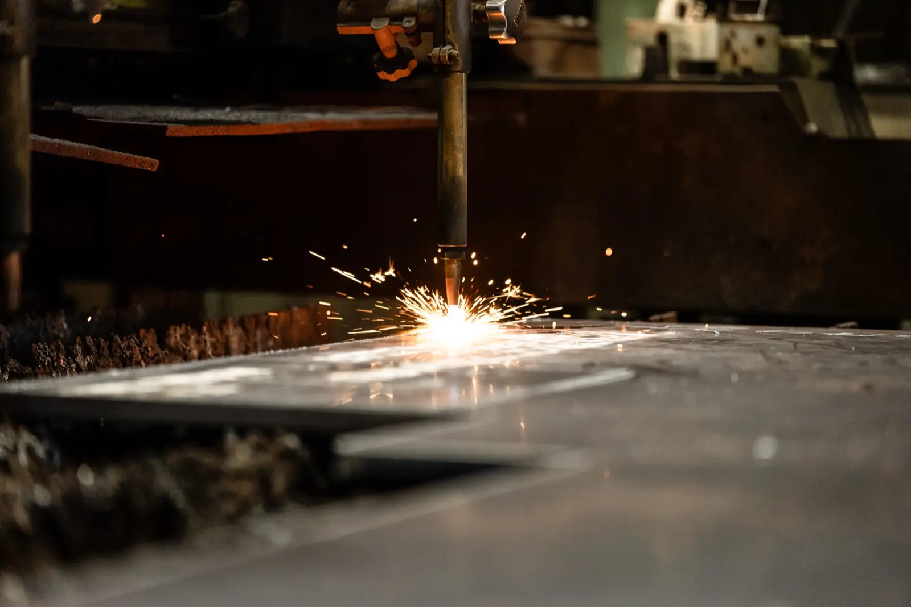
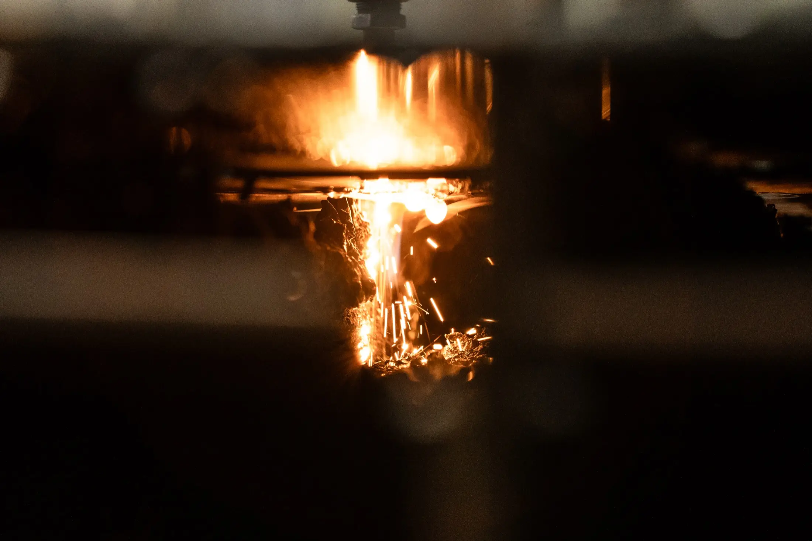
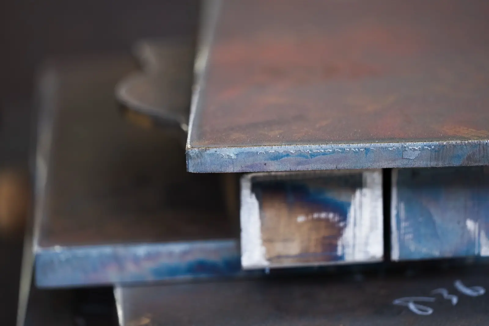
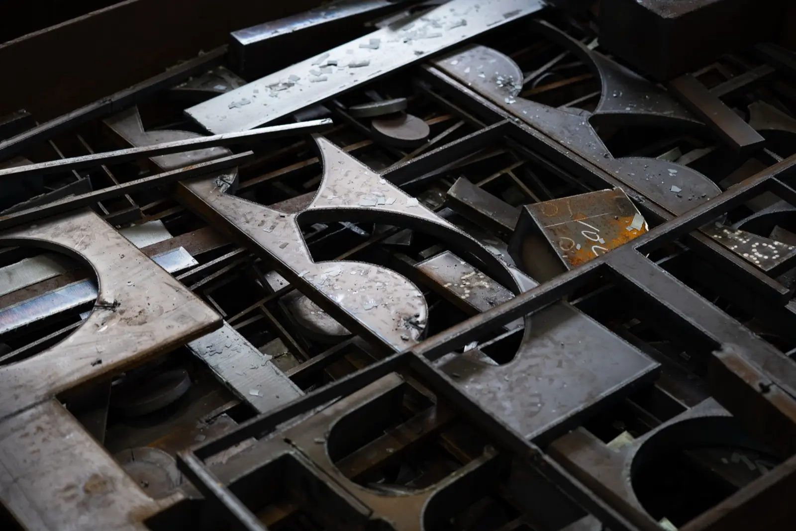

ホーム＞厚板ガス切断・溶断
GAS CUTTING / CUT PLATE厚板ガス切断・溶断｜6〜150mm・1枚から短納期対応
SS400 6〜150mm常時在庫｜
寸法切り・型切り・ミルシート発行・全国発送に

01 Gas Cutting
厚板ガス切断加工
創業60年の経験と技術で、極厚板を図面どおりに切り出します
極厚鋼板の
※その

02 Cut Plate
切板の販売
SS400の厚板を常時在庫
SS400
鉄板
Our Factory
自社工場でできること
自社の
| 対応鋼種 | SS400を |
|---|---|
| 板厚 | 6〜150mm150mm超は |
| 最大加工寸法 | 1800mm × 6096mm |
| 切断精度 | JIS B 0417 |
| 最小ロット | 1枚から自社切断品は |
| 納期 | 在庫品は |
| 対応図面 | DXF・DWG・PDF・FAX・紙図面・手書きスケッチも可 |
| ミルシート | 発行可 |
| 発送 | 全国発送／近隣は |
Use Case
こんなときにお使いください
他社に「1枚では受けられない」と断られた
自社切断品は
個人・個人事業主の方
法人・個人を
明日の朝までに厚板が必要
在庫品は
CADデータがなく、紙の図面しかない
FAX
100mmを超える極厚を切りたい
SS400は
ミルシートが必要
元請様への
Network
協力会社ネットワークでできること
自社工場で
「この
| 材質 | 一般 機械構造用炭素鋼 ステンレス 高張力鋼 ダクタイル鋳鉄 |
|---|---|
| 加工 | 型切り／レーザー切断／プラズマ切断／シャーリング／曲げ／フライス／穴あけ／ショットブラスト |
| 形状 | 平鋼 |
鋼材の
Estimate
お見積りに必要な情報
- 板厚・幅・長さ
（mm） - 数量
- 材質
分からない
場合は 用途を お知らせ ください。 ご提案します。
図面が
Payment & Pickup
お支払い・お引き取り・送料
初めての
| お支払い | 銀行振込 |
|---|---|
| 工場での | 平日 8:00〜17:00 に |
| 送料 | 製品の |
鋼材図鑑
切断する
FAQ
よくあるご質問
小ロット・1枚からでも注文できますか？
はい、
見積りを依頼するとき、何を伝えれば良いですか？
板厚・幅・長さ
どのくらいで納品できますか？
在庫品は、
配送・発送はしてもらえますか？
はい、
ミルシート（鋼材証明書）はもらえますか？
はい、
Cases
こんなお問い合わせを解決しました
実際に
機械修理に必要な 厚板が 明日の 朝までに 欲しい
製造業の
結果：
図面通りの寸法で 鋼材を 切断・納品してほしい
建設会社様より
結果：図面通りに
店で使う 鉄板を、 厚みに こだわって 作ってほしい
ハンバーグレストラン様からの
結果：厚さ9mm・カスタムサイズの
1枚だけ欲しいと言ったら 他社に 断られてしまった
「まとめてでないと
結果：1枚・ご希望サイズに
ミルシート（鋼材検査証明書）も 一緒に 欲しい
元請様への
結果：切板に

Contact
板厚・寸法・
図面が